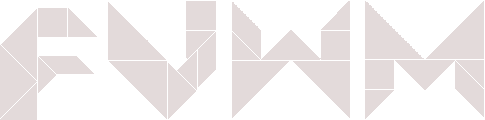
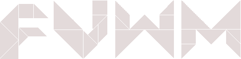

I see FVWM as very modular, and therefore flexible and powerfull. In my logo I visualize that by using the Tangram pieces. There are only 7 (8 if you count the rhomb as two ;) pieces, but with these pieces you can form over 6000 different figures. Same with FVWM using the modules, and using them differently you can get an almost unlimited amount of different configurations. This is what I try to tell in my logo; by using the same 7 Tangram pieces I am able to form the 4 different letters F V W M.
I made the outlines with DIA and then exported to PNG, and finished with GIMP. The forms are geometric so resizing is not a problem (as you can see I have provided the logos in 3 different sizes. Also the background is transparent, so the logo should look good on any background. I have also included the logo in light-gray, for use on a dark background. I can provide any color you want :)


